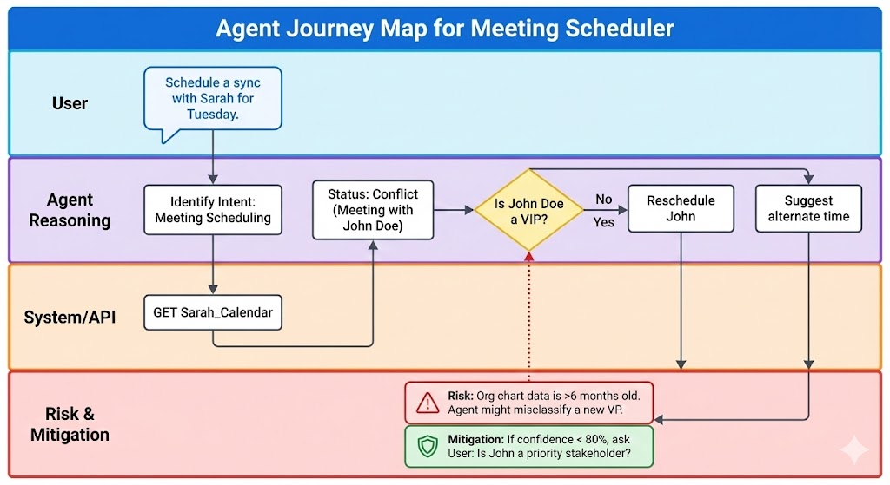

Agentic AI stands ready to transform customer experience and operational efficiency, necessitating a new strategic approach from leadership. This evolution in artificial intelligence empowers systems to plan, execute, and persist in tasks, moving beyond simple recommendations to proactive action. For UX teams, product managers, and executives, understanding this shift is crucial for unlocking opportunities in innovation, streamlining workflows, and redefining how technology serves people.
We can categorize agent behavior into four distinct modes of autonomy. While these often look like a progression, they function as independent operating modes. A user might trust an agent to act autonomously for scheduling, but keep it in “suggestion mode” for financial transactions.
The agent functions as a monitor. It analyzes data streams and flags anomalies or opportunities, but takes zero action.